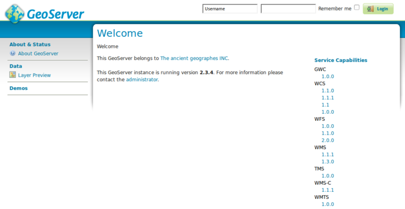

Guide de démarrage rapde de GeoServer¶
GeoServer est une application java pour servir des cartes (et des données) à dessiner par d’autres clients (tels que les navigateurs Web). GeoServer est livré avec une interface de gestion basée sur le navigateur et se connecte à plusieurs sources de données en arrière-plan.
Ce guide décrit comment :
- ajouter une source de données vectorielle et raster à GeoServer
- appliquer la couleur aux entités de la carte en utilisant un style
- tester les couches dans une carte web simple
- en savoir plus sur les clients qui peuvent afficher vos cartes
- ajouter une couche à partir d’un fichier NetCDF
Contents
Démarrer Geoserver¶
Dans le menu Démarrer, sélectionnez . L’application prendra quelques instants pour démarrer et ouvrira une page web à l’adresse http://localhost:8082/geoserver/web
Connectez-vous à l’aide du nom d’utilisateur admin et du mot de passe geoserver. Vous verrez maintenant la page d’administration.

Sélectionnez le lien Layer Preview en haut de la section Data dans le menu de gauche pour afficher un aperçu des couches chargées dansle serveur.

Faites défiler vers le bas de la page et cliquez sur le lien OpenLayers dans la ligne tiger-ny. Cela ouvrira une nouvelle fenêtre avec un aperçu de certaines des données de l’exemple.

Vous pouvez zoomer sur la carte de trois façons :
- en cliquant sur la barre de zoom sur la gauche, plus vous cliquez dessus, plus vous effectuez un zoom avant.
- en utilisant la roue de défilement de la souris (si vous en avez une), le défilement vers le haut fera un zoom avant et vers le bas fera un zoom arrière.
- en faisant glisser une zone sur la carte tout en maintenant la touche
Majuscule- cela va zoomer sur la zone sélectionnée (ou aussi près que possible des dimensions de l’écran).
{kind=link}
Expérimentez avec cette vue et regardez quelques-uns des autres aperçus. Une fois que vous êtes à l’aise d’afficher les données existantes, vous pouvez passer à l’ajout de nouvelles données.
Chargement des données¶
Note
Vous ne pourrez pas effectuer les étapes suivantes si vous exécutez un système de fichiers read only (tel que le DVD). Vous devrez soit courir dans une machine virtuelle, soit à partir d’un USB, soit installer OSGeoLive (ou tout simplement GeoServer) sur votre disque dur.
Dans cet exemple, nous allons utiliser le jeu de données Natural Earth qui est inclus sur OSGeoLive (/usr/local/share/data/natural_earth2/).
Nous devons créer un Entrepôt pour nos données. Depuis la page d’administrateur de GeoServer aller à Stores.
Cliquez sur Add new Store. Vous verrez cette page :

Sélectionnez le Directory of spatial files. Vous verrez ce qui suit :

Tapez un nom pour l’Entrepôt de données (par exemple, Natural Earth) et remplissez l’URL du jeu de données - dans ce cas
/usr/local/share/data/natural_earth2/. Vous pouvez utiliser le bouton de navigation pour trouver le répertoire si vos données sont ailleurs.Appuyez sur save.

Appuyez sur publish à côté de l’une des couches pour terminer l’ajout des données. Cela vous mènera à la page Layers :

Lorsque vous faites défiler la page, vous verrez que GeoServer a rempli de nombreux champs pour vous. Lorsque vous atteignez Coordinate Reference System, vous remarquerez que sous Native SRS il est dit UNKNOWN, vous devrez remplir la case suivante (declared SRS) pour vous assurer GeoServer sait où se trouvent les données.
Vous pouvez taper epsg:4326 dans la zone, ou aller à http://prj2epsg.org/search et coller dans la chaîne que vous voyez si vous cliquez sur le lien à côté de « UNKNOWN ».
Cliquez sur Compute from data et Compute from native bounds pour remplir les zones de délimitation.
Enfin appuyez sur save et vous avez publié votre première couche.
Note
Ne vous inquiétez pas si l’aperçu de la couche n’a pas l’air très bon car il utilise le style par défaut. Dans la section suivante, nous allons regarder à la production d’un style plus agréable.
Vous pouvez suivre la même étape avec les autres calques du répertoire à l’aide du bouton Add a new resource sur la page calques. Il suffit de sélectionner l’entrepôt Natural Earth dans la boîte déroulante pour revenir à la page du magasin.
Données de style¶
Stylisation d’un ensemble de données dans une couche de carte GeoServer utilise une norme OGC appelée Styled Layer Descriptor (SLD). Ceux-ci sont représentés sous forme de fichiers XML qui décrivent les règles utilisées pour appliquer différents symbolisateurs aux données.
Pour commencer, permet de styler les jeux de données Land and Ocean. Vous pouvez créer des fichiers SLD à l’aide d’un éditeur de texte simple, mais parfois un éditeur graphique est mieux. Il y a plusieurs options ici, mais uDig vous permet d’ouvrir les fichiers de forme directement et d’appliquer des styles simples à l’aide d’une interface graphique. Il fournit également un éditeur simple pour modifier le XML si besoin.
Utilisation de uDig pour créer des styles simples¶
Note
Pour plus de détails sur l’utilisation de uDig voir le uDig Quickstart
Ouvert uDig et ajouter les fichiers shape (en utilisant le bouton ajouter des données dans le coin supérieur gauche).
Faites glisser les tables ne_10m_land et ne_10m_ocean dans la fenêtre de la carte. uDig applique automatiquement un style (afin que vous puissiez voir les données).

Dans la liste Layer list sélectionnez le bouton de style (il ressemble à la palette d’un artiste)

Cela ouvrira le volet Style Pane.
Dans la fenêtre simple, nous pouvons facilement sélectionner un beau bleu pour les océans en cliquant sur la boîte colorée sur l’onglet de remplissage et en choisissant parmi le sélecteur de couleur produit. Nous pouvons également augmenter l’opacité du remplissage à 100% pour rendre la couleur plus jolie. Choisissez le même bleu pour la bordure afin qu’elle corresponde.

Cliquez sur
OKet uDig affichera les modifications.
Répétez les étapes ci-dessus pour modifier la couleur de la couche terrestre. Vous pouvez utiliser la section``define custom colors`` pour créer votre couleur préférée.

Cela donne une belle carte de base mondiale.

Ajout le style à GeoServer¶
Maintenant, nous avons besoin de transférer ces styles à GeoServer.
- Sur la fenêtre de style, il y a un bouton d’exportation qui vous permet d’enregistrer le fichier SLD qui définit votre style.
- Une fois enregistré, vous pouvez à nouveau aller sur la page d’administration de GeoServer et sélectionner
Styles(en bas de la sectionData). - Sélectionnez le lien
Add New Style. Au bas de cette page se trouve une zone de téléchargement de fichiers et un bouton de navigation. - Cliquez sur Parcourir pour trouver les fichiers que vous venez d’enregistrer.
- Cliquez sur le lien de téléchargement (en regard du bouton de navigation) et une copie du fichier apparaît dans l’éditeur.
- Si vous cliquez sur le bouton valider, les lignes mises en surbrillance vous donneront une erreur, mais vous pouvez ignorer en toute sécurité l’erreur (ou supprimer ces lignes car elles ne font rien).
- Appuyez sur le Submit en bas de la page.

Ajout du style à la couche¶
- Cliquez sur le lien Layers dans le menu à gauche de la fenêtre GeoServer.
- Cliquez sur la couche (p. ex. ne_10m_land), puis sélectionnez l’onglet Publishing.
- Modifiez la zone Default Style avec le nom du style que vous avez téléchargé dans la section précédente.
- Cliquez maintenant sur Save et accédez à la page Layer Preview pour vérifier son apparence.
Note
Il existe des exemples de fichiers de style pour toutes les couches Natural Earth présentes en exemple dans /usr/local/share/geoserver.
Clients pour les couches WMS¶
Les couches Web Map Service (WMS) que vous servez à partir GeoServer peut être utilisées avec une variété de clients dans cette distribution OSGeoLive, y compris:
Ajouter une couche à partir d’un fichier NetCDF¶
Le plugin GeoServer NetCDF permet la publication de rasters à partir de fichiers NetCDF.
Configurer un entrepôt NetCDF¶
Après avoir lancé « Démarrer GeoServer »
Connectez-vous en tant qu’administrateur.
Cliquez sur Add stores puis NetCDF.
Entrez une valeur pour le nom de source de données (cet exemple utilise « netcdf ») et une URL NetCDF. Vous pouvez utiliser cet exemple de fichier
file:///usr/local/share/data/netcdf/polyphemus_20120401.nc
Appuyez sur « Save », « Publish » la couche « O3 ».
Faites défiler vers le bas jusqu’au bas de l’onglet « Data » et appuyez à nouveau sur « Save ».

Aperçu de la couche NetCDF¶
Sélectionnez « Layer Preview » dans le menu de gauche
Faites défiler vers le bas pour trouver l’entrée « cite:O3 », puis cliquez sur le lien « OpenLayers » pour afficher un aperçu de la couche.
En cliquant sur les points, la valeur « Ozone_concentration » sera indiquée dans un tableau en bas de la carte.

Note
Cette instance GeoServer a été configurée avec la propriété du système Java NETCDF_DATA_DIR pour permettre la publication de fichiers NetCDF dans des répertoires en lecture seule.
Ensuite ?¶
Ce n’est que la première étape sur la voie de l’utilisation de GeoServer. Il y a beaucoup plus de fonctionnalités que vous pouvez essayer.
- Page internet du projet GeoServer - http://geoserver.org/
- Manuel d’utilisation GeoServer - https://docs.geoserver.org/latest/en/user/
- Tutoriels GeoServer - https://docs.geoserver.org/latest/en/user/tutorials/index.html
- Atelier de style GeoServer - https://docs.geoserver.org/latest/en/user/styling/workshop/index.html